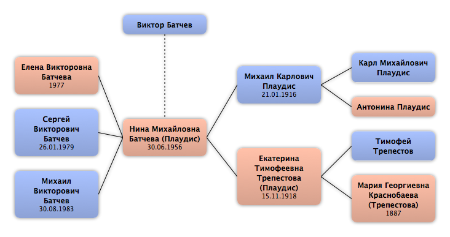

Домой
Домой
 Люди
Люди
 Семьи
Семьи
 Источники
Источники
 Диаграммы
Диаграммы
 Статистика
Статистика
Виктор Батчев

Контекст

Родители
| Отец | Дата рождения | Мать | Дата рождения |
|---|
Родители и дети
| Партнёры | Дата рождения | Дети |
|---|---|---|
 Нина Михайловна Батчева Нина Михайловна Батчева
|
30.06.1956 |
Елена Викторовна Батчева
Сергей Викторович Батчев
Михаил Викторович Батчев
|
События
Факты
Медиа
Примечание
Источники
Родство
| Имя | Степень родства | Дата рождения | Место рождения | Дата смерти | Место смерти |
|---|---|---|---|---|---|
| Партнёров | |||||
| Партнёр или жена | 30.06.1956 | Ефимовский пос., Ленинградская обл, СССР | |||
| Дети | |||||
| Дочь | 1977 | 1997 | |||
| Сын | 26.01.1979 | ||||
| Сын | 30.08.1983 | ||||